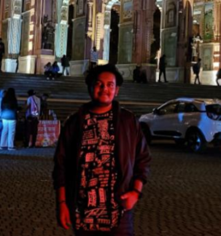

Kartik Sharma

Summary
- Hi! I am always intrested in finding better solution of any problem whether it's related with code or electronics. I am also a Video Editor,done some freelance work for fun and money.
Education
- Secondary and Senior Secondary Education from : St. John's Sr. Sec. School, Kota, Rajasthan
- Btech. in Electronics and Communication Engineering (2023-2027) LNMIIT, Jaipur
- Other skills from online platforms like Youtube,Udemy,etc
Work Experience
-
Done science and social projects,representng school in various exibition.
- water harvesting project
- waste to best proect,etc
-
Done projects related to Electronics and communication.
- Made a RC Car with group, which includes both hardware and software parts like Ardrino, MicrocontrollerUnit(MCU) and use C++ for the coding part.
-
Made a Mobile transmitor Detector for analog project, which detects signals and make Led glow when some call or message is coming in nearby mobile.
-
Made a Travel Clone Website(only Frontend)
Skills
- C, C++, Python
- HTML, CSS, Javascript
- Linux, Shell Scripting
- Video Editing(Adobe Premere Pro)
- Graphic Designing
Awards and Certificates
- Won interschool debate Competiotion.
- Full Stack Web Developer (yet to come)
- GenAi,ResponsiveAi(yet to come)
- Codeforces/leetcode rank (yet to come)
- won some hackathon(yet to come)